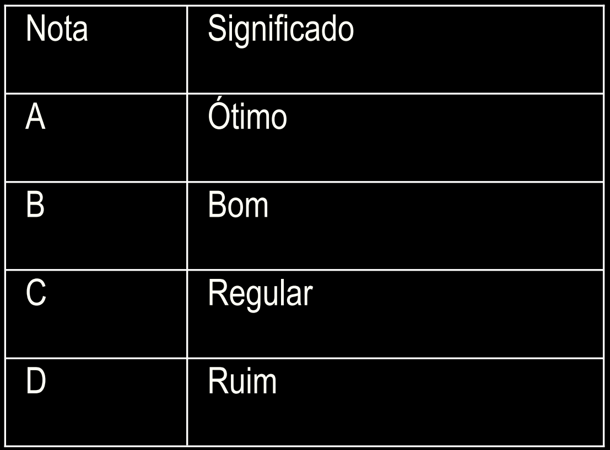
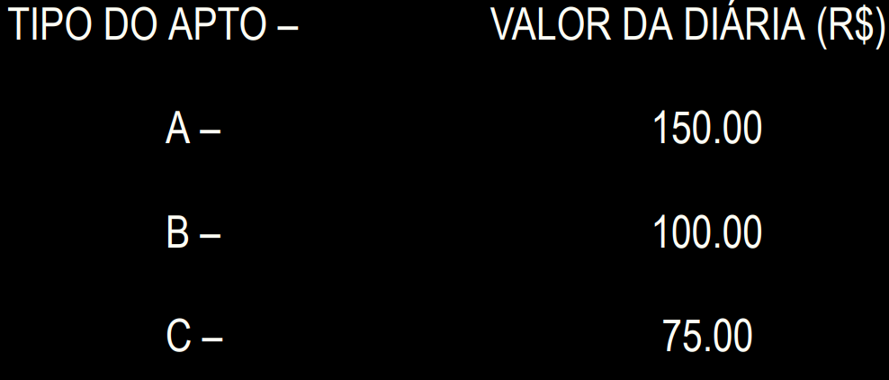
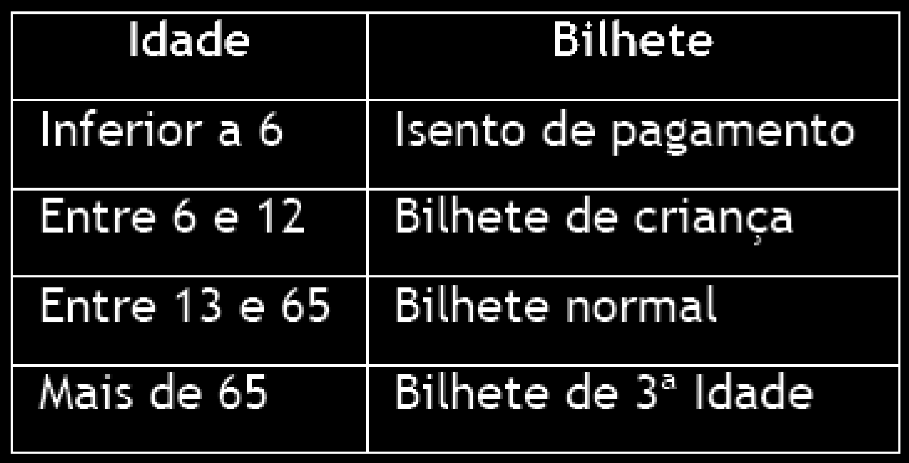

MINISTÉRIO DA EDUCAÇÃO
SECRETARIA DE EDUCAÇÃO PROFISSIONAL E TECNOLÓGICA
INSTITUTO FEDERAL DE EDUCAÇÃO, CIÊNCIA E TECNOLOGIA DE SANTA CATARINA
CÂMPUS LAGES
CURSO CIÊNCIA DA COMPUTAÇÃO
INTRODUÇÃO À PROGRAMAÇÃO
LISTA DE EXERCÍCIOS 4
Aluno:
Fabrício Iaronka de Souza |
Data:
23/04/24
01. Escreva uma algoritmo que leia dois valores. O algoritmo encerra quando o
primeiro valor informado for igual ao segundo valor.
Resposta: L4Exer1.java
02. Elabore um algoritmo que leia dois números inteiros. O segundo número lido
deverá ser maior que o primeiro número. Mostre a soma dos dois números
lidos
Resposta: L4Exer2.java
03. Elabore um algoritmos que leia o nome, idade, sexo de uma pessoa. O
algoritmo encerras se a idade lida for igual a zero. Mostre a quantidade de
repetições do algoritmo.
Resposta: L4Exer3.java
04. O cardápio de uma lancheria é o seguinte:

Escrever um algoritmo que mostre o cardápio para o usuário e permita que o
usuário informe o código do item pedido, a quantidade e calcule o valor a ser
pago por aquele lanche. Mostre na tela o item pedido e o valor a ser pago.
Resposta: L4Exer4.java
05. Escrever um algoritmo que mostre o cardápio para o usuário e permita que o
usuário informe o código do item pedido, a quantidade e calcule o valor a ser
pago por aquele lanche. Mostre na tela o item pedido e o valor a ser pago.
-a maior altura da turma;
-a média de altura das mulheres;
-a média de altura da turma.
Resposta: L4Exer5.java
06. Um cinema possui capacidade de 20 lugares e está sempre com ocupação
total. Certo dia, cada espectador respondeu a um questionário, no qual
constava:

-sua idade
-sua opinião em relação ao filme, segundo as seguintes notas:
Elabore um algoritmo que, lendo estes dados, calcule e imprima:
-a quantidade de respostas ótimo;
-a média de idade das pessoas que responderam ruim;
-a diferença de idade entre a pessoa de maior idade com a pessoa de menor
de idade que responderam o questionário.
Resposta: L4Exer6.java
07. Faça um programa para calcular a conta final de um hóspede de um hotel
fictício, considerando que: . Devem ser lidos o nome do hóspede, o tipo do
apartamento utilizado (A, B, C), o número de diárias utilizadas pelo hóspede
(que deverá ser superior a zero);
O valor da diária é determinado pela seguinte tabela:

- Calcule o total a pagar ( total a pagar é o valor da diária multiplicado pelo
numero de dias hospedados)
- Escreva a conta final contendo: o nome do hóspede, o tipo do
apartamento, valor total das diárias.
- Para cadastrar os dados de novo hóspede pergunte Deseja continuar
S/N.
Resposta: L4Exer7.java
08. Escreva um programa para determinar o tipo de bilhete que cada visitante de
um parque de diversão deve comprar. O tipo de bilhete é determinado em
função da idade do visitante, de acordo com a tabela abaixo. O programa
deverá solicitar a leitura de um novo bilhete. A execução do programa deverá
encerrar quando o usuário informa “não”. Mostre no final a quantidade de
bilhetes infantis e adultos vendidos.

Resposta: L4Exer8.java
09. Construir um algoritmo que calcule o imposto de renda de um contribuinte,
considerando que seus dados (CPF, renda mensal e classe de renda) são
valores informados pelo usuário. Mostre na tela a alíquota de desconto
aplicada e o valor a ser descontado. O algoritmo encerra quando for informado
o CPF 00

Resposta: L4Exer9.java